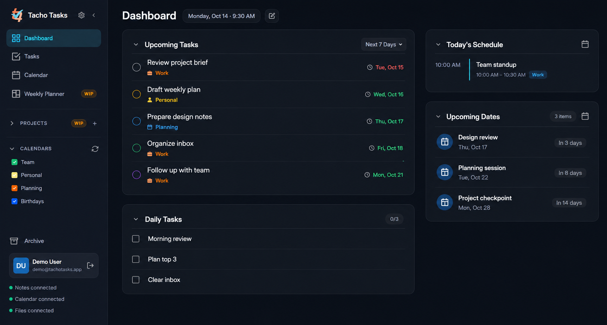
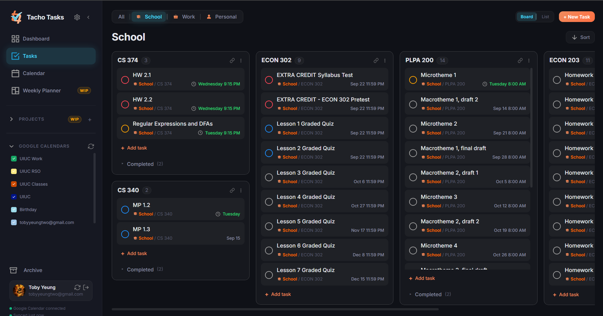
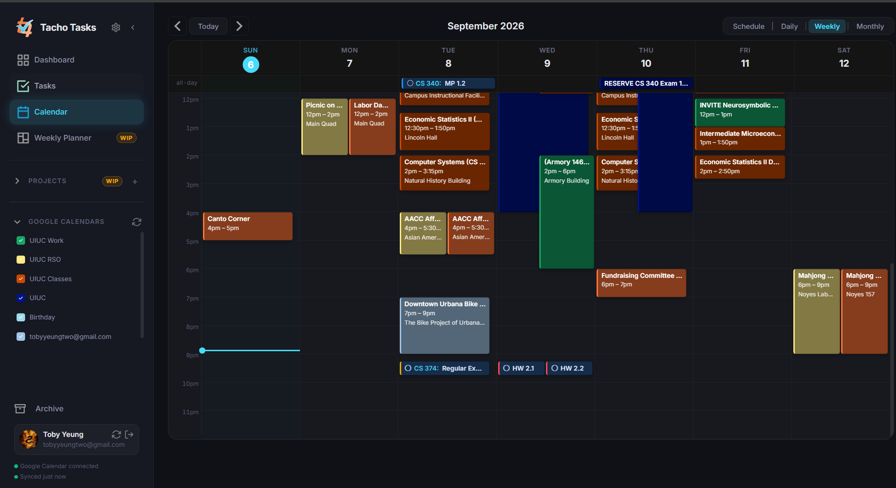
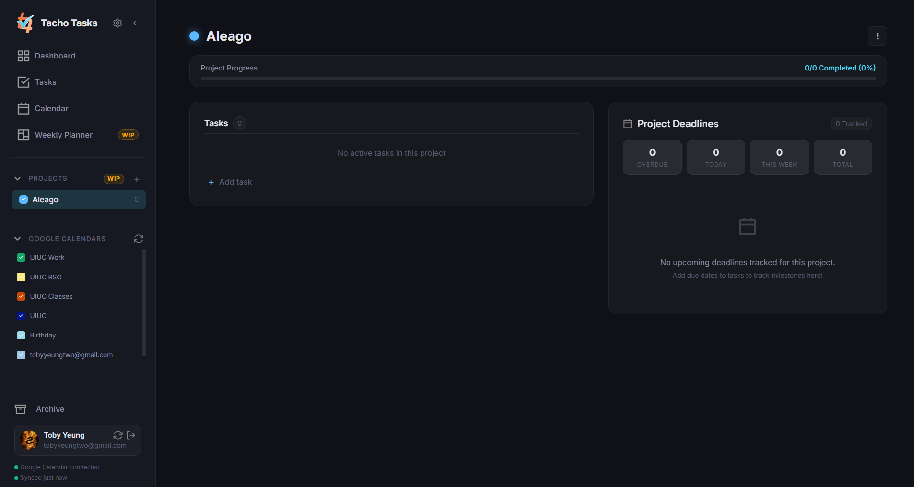

Dashboard
Start with what matters: today’s focus, completed work, upcoming tasks, and your current priorities in one clear view.
A better kind of busy
Tacho is a home for the loose ends, bright ideas, and real-life plans that make up your week.
Windows, macOS, Linux, or your browser. Same day, wherever you are.

Everything in its place
Start with what matters: today’s focus, completed work, upcoming tasks, and your current priorities in one clear view.
Capture tasks quickly, give them priorities, organize them into global projects and sections, then keep momentum moving.
See your task deadlines alongside Google Calendar events, then map out the week in a dedicated planning view.
Choose your priority colors, preferences, profiles, and sync setup—so the workspace works the way you do.

Organize work in a visual board.

Plan tasks beside your events.

Track each project’s progress.
Desktop app
Install the desktop app for a roomier workspace, native notifications, local storage, and quiet automatic updates.